Care Compass: Family guide
This guide is for family members who look after the care plan of someone they love. It shows you, step by step, how to set up your account, add care, see what the carers have done and keep track of the budget. Take it one step at a time. You cannot break anything by looking around.
The pictures use made-up example people. Margaret Doyle is the person being cared for, and Helen Doyle is her daughter.
Web address: the Care Compass team or your care organisation will tell you the address of the website. Write it down and keep it somewhere safe.
Words used in this guide
| Word | What it means |
|---|---|
| The person you care for | The person whose care plan this is. Care Compass calls them the client. |
| Organisation | The care company whose carers look after your person. |
| Carer | A nurse or support worker from the organisation. |
| Event | Anything on the calendar, such as a doctor's visit or a medication time. |
| Task | An event a carer must tick off once it's done. |
| Bucket | One source of money, such as NDIS or a government subsidy. |
1. Getting started
Create your account
- Go to the Care Compass web address and click Create an account at the bottom of the sign-in box.
- Under Account type, leave Family member selected.
- Fill in your own first and last name.
- Under Their first name and Their last name, type the name of the person you care for.
- Enter your email, then choose a password and type it again.
- Click Create an account.
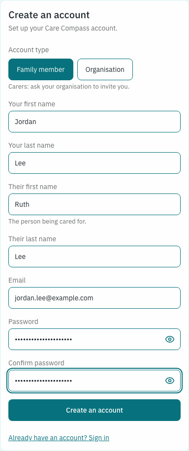
Care Compass opens straight onto your person's Home page. It's empty to start with, because nothing has been added yet.
Carers can't create their own accounts. Their organisation invites them.
Link your person to their care organisation
Until you do this, no carer or organisation can see your person's plan.
- Click Settings in the menu on the left.
- Under Change organisation, click Choose organisation.
- Click the organisation's name, then Continue.
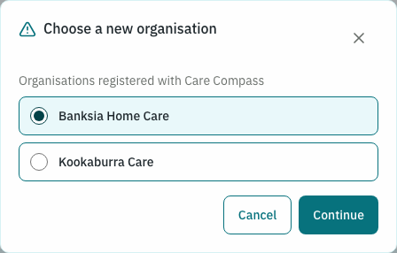
- Care Compass checks that you're sure, because the organisation will be able to see your person's routines, events, budget, documents and history. Click Change organisation to confirm.
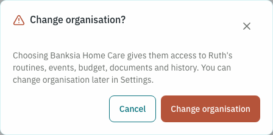
The organisation's name now shows at the top of every page, next to your person's name. From here the organisation can roster carers.
Signing in next time
Go to the web address, enter your email and password, and click Sign in.
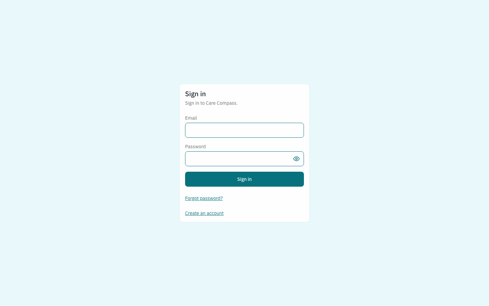
If you forget your password, click Forgot password? on the sign-in page. Type your email and Care Compass will send you a link to set a new one.

2. Finding your way around
The menu down the left side of the screen takes you to each page:
- Home: what's happening today
- Client Details: information about your person
- Documents: every file you've added
- Calendar: all events by day, week or month
- Budget: money in and money spent
- Settings: your details and the organisation
The bar across the top shows your person's name, age, suburb and organisation. To sign out, click the arrow icon in the top right corner.
Some buttons have a small i in a circle beside them. Click it for a one-line explanation of what the button does.
3. Home
Home shows today at a glance.
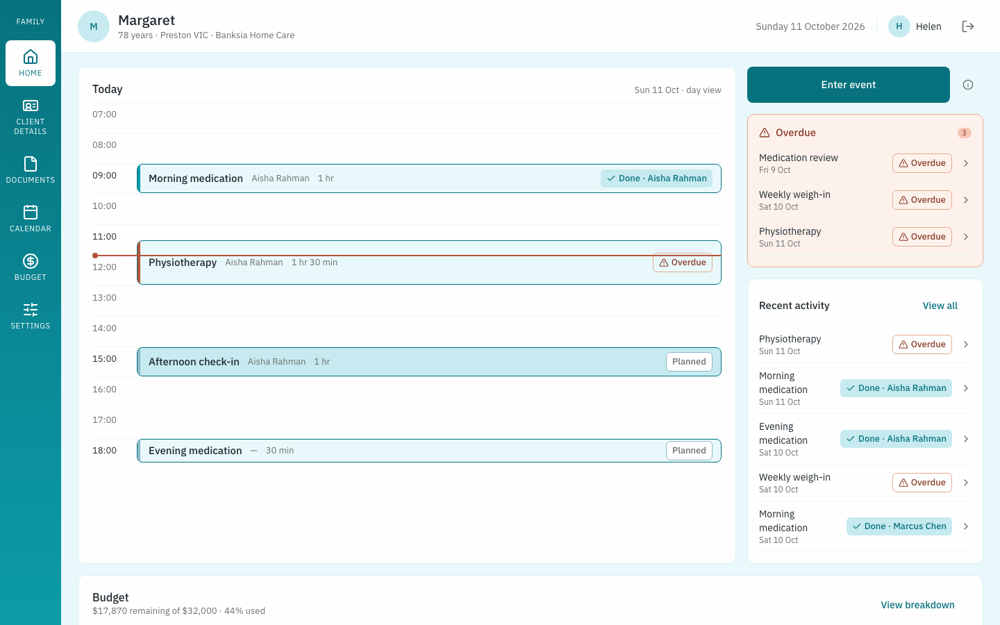
- Today lists today's events from morning to evening. The red line is the time right now.
- Overdue lists tasks whose time has passed without being ticked off.
- Recent activity shows the latest tasks that were done or missed. Click View all to see the full task log.
- Budget (scroll down) shows how much money is left. Click View breakdown to open the Budget page.
Click any event to see its full details.
What the labels mean
| Label | Meaning |
|---|---|
| Planned | Coming up, or due now and not yet ticked off. |
| Done · Aisha Rahman | A carer ticked it off. Their name is shown. |
| Overdue | Its time has passed and nobody ticked it off. |
Each label also has its own icon, so you don't have to rely on the colour.
4. Adding care to the calendar
- Click Enter event on Home or on the Calendar.
- Pick the Date from the small calendar on the right.
- Under Recurring, choose how often it happens: Does not repeat, Daily, Weekly, Fortnightly, Monthly, Every 2 months, Quarterly, Every 6 months or Yearly. A repeating event carries on with no end date until you change it.
- Type a Title, such as "Morning medication".
- Type the Start time using the 24-hour clock, for example 09:30 or 14:00. End time is optional.
- Decide whether it's a task. Leave This is a task — must be ticked off switched On if a carer has to confirm it was done. Switch it Off for things like appointments that only need to show on the calendar.
- If it costs money, type the Cost in dollars and choose which bucket it's Paid from. Leave Cost empty if it's free.
- Add a Description with any instructions for the carer.
- To attach a file, such as a referral letter, click Add file. You can add PDF, Word (.docx) and photo files (JPG, PNG or HEIC).
- Click Save event.
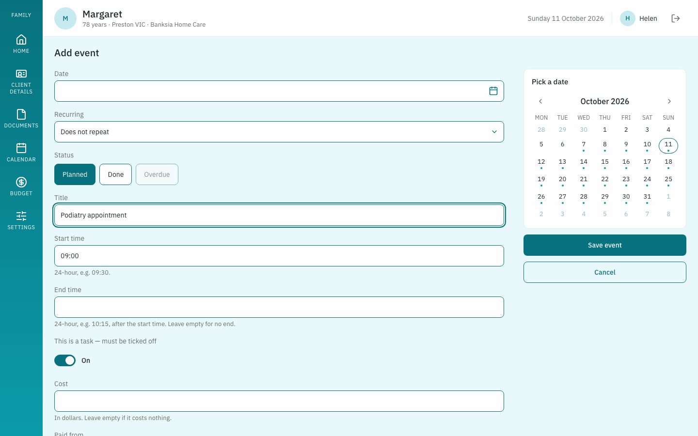
You can leave the Status buttons as they are. Only a carer can mark a task Done, and the app works out Overdue by itself.
Changing an event
- Click the event on Home or the Calendar.
- Click Edit event.
- Make your changes.
- Under Scope, choose This occurrence to change only that one day, or Entire series to change every repeat.
- Click Save event.
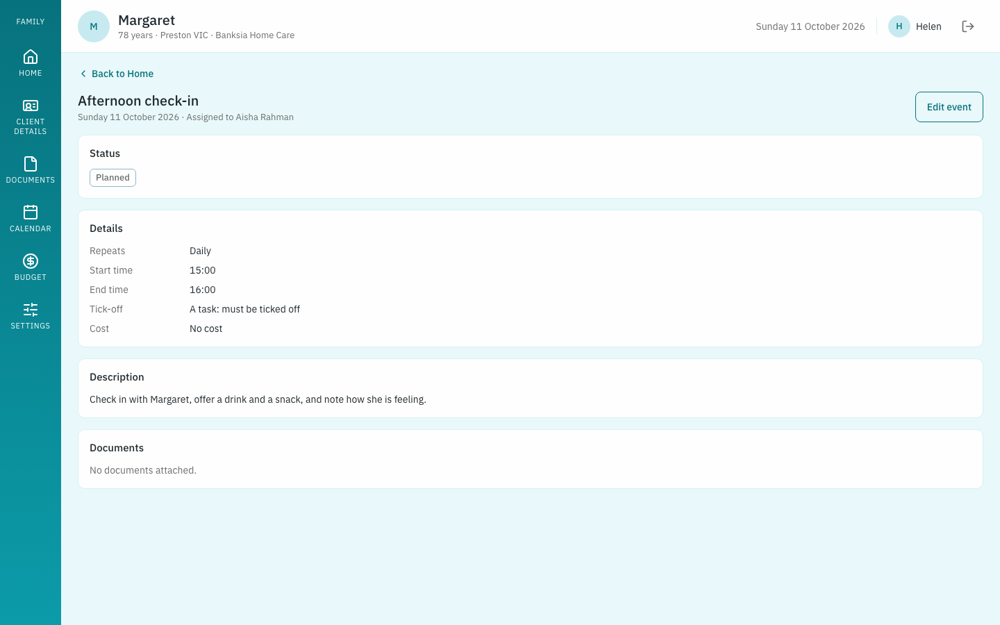
The This and future option is greyed out because it wasn't built.
5. Ticking off care
Carers tick off tasks, not family members. A tick tells you that care was really given, so Care Compass only lets the carer on shift give one.
When a carer ticks a task, you see Done with their name. The task log also shows when it was done and whether it was late, for example "Completed 14 minutes late".
The task log
Click View all under Recent activity to open the Task log. It lists every task, newest first, with the carer and the status. Use the Status filter to show only Planned, Done or Overdue tasks.
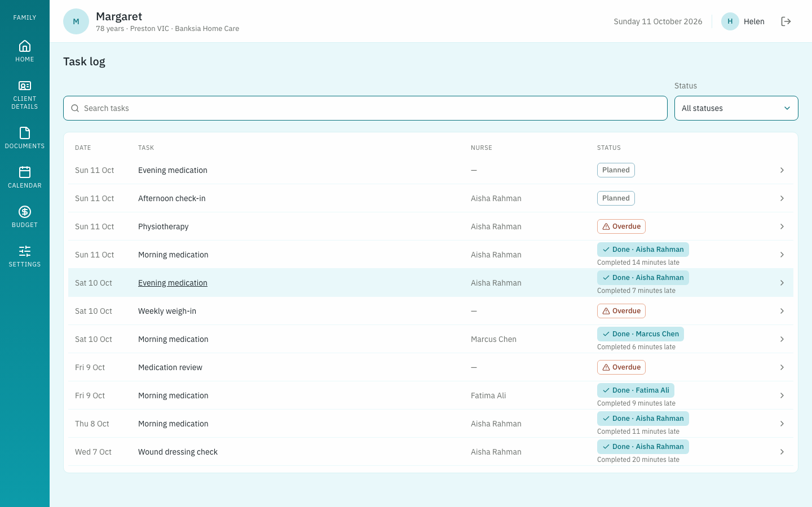
6. Calendar
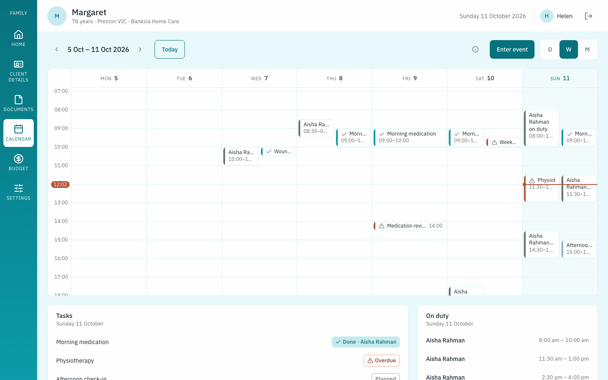
- Click D, W or M in the top right to see a day, a week or a month.
- Use the arrows beside the date to move back or forward. Today jumps back to now.
- Grey blocks show which carer is on duty and when.
- Below the calendar, Tasks lists the chosen day's tasks with their status. On duty lists the carers rostered that day.
Click any event to open its details.
7. Client Details
This page holds what carers need to know about your person.
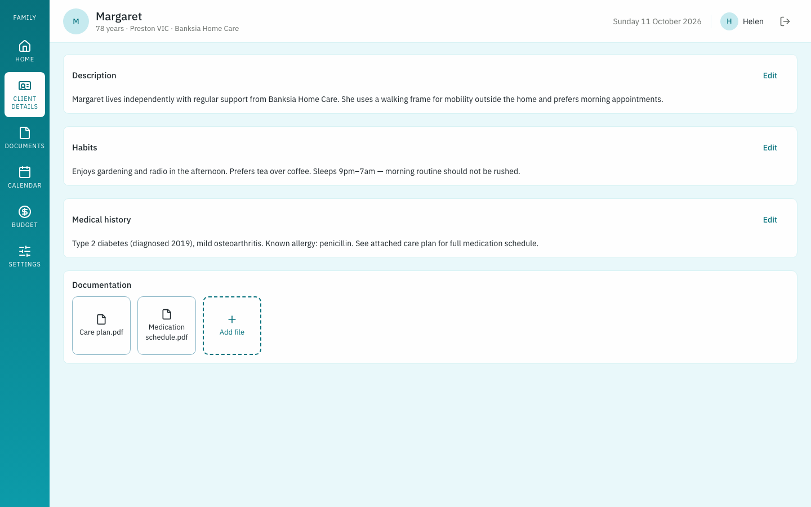
- Description, Habits and Medical history each have an Edit button. Click it, make your change, then click Save.
- Documentation lists files about your person in general, such as a care plan. Click Add file to upload one.
8. Documents
The Documents page lists every file in one place: files on Client Details and files attached to events.
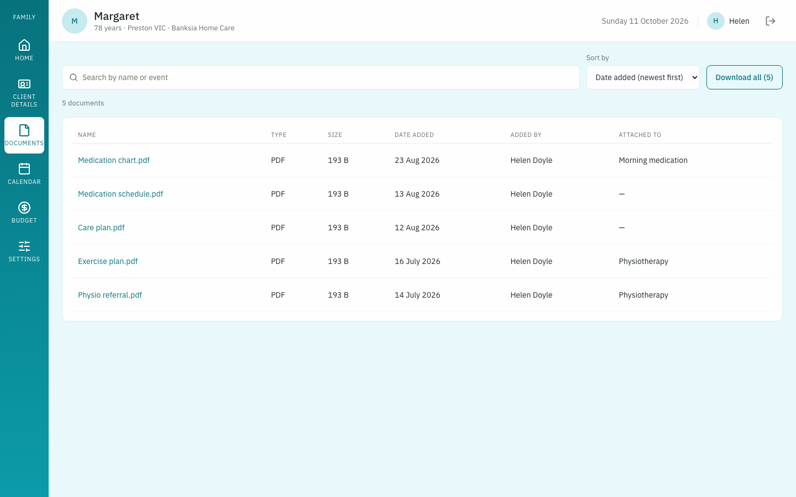
- Type in Search documents to find a file by name.
- Use Sort by to order them by date added, name or size.
- Attached to shows which event a file belongs to.
- Click a file to open it. Download all saves every file at once as a single zip file.
To add a new file, use Add file on Client Details or on an event.
9. Budget
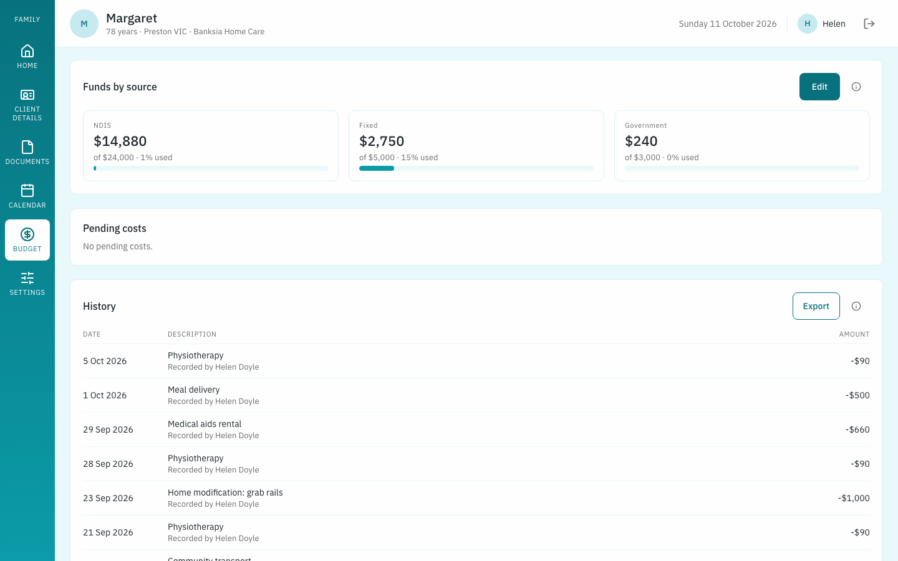
Funds by source has one card for each bucket. Each card shows:
- the amount left, in large type
- the total put in
- how much of this month's money has been used
The month figure starts fresh each month, but any money you don't spend carries over. That's why a bucket can show a low percentage for this month even when a lot has been spent overall. The Budget box on Home shows the overall figure.
Pending costs lists costs that couldn't be paid because their bucket ran short. Add money to that bucket and they're paid.
History lists every amount in and out, newest first, with who recorded it. Click Export to download it as a spreadsheet file (CSV).
When costs come out
A task's cost comes out of its bucket when the carer ticks it Done. An event that isn't a task is charged once it has finished.
Adding money or changing buckets
- Click Edit on the Budget page.
- To add money, type the amount in a bucket's Amount box and leave Add selected. To take money out, click Remove first.
- To rename a bucket, change its Name.
- To create a new source of money, click Add bucket.
- Write a Note if you want a reminder of what the change was for.
- Click Save.
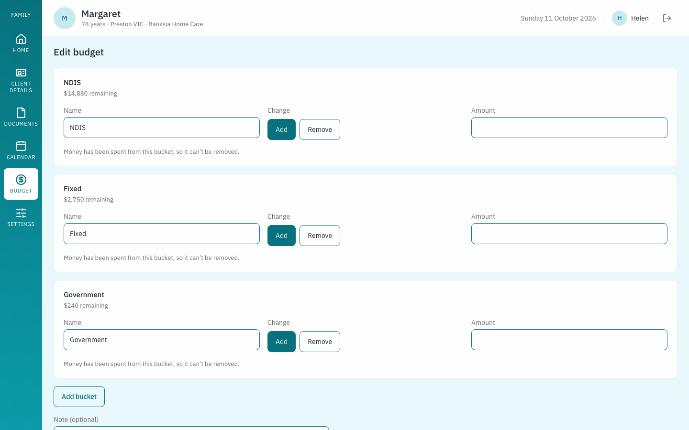
You can't delete a bucket once money has been spent from it, so its records stay complete.
10. Emails you'll receive
Care Compass emails you and the organisation's managers when:
- a bucket reaches 75%, 85% and 100% of this month's money
- a cost is pending because its bucket ran short
- a task is still not ticked off at least 30 minutes after it was due
The email subject starts with "Schedule of Care Program", and the email asks you to log in and check.
11. Settings
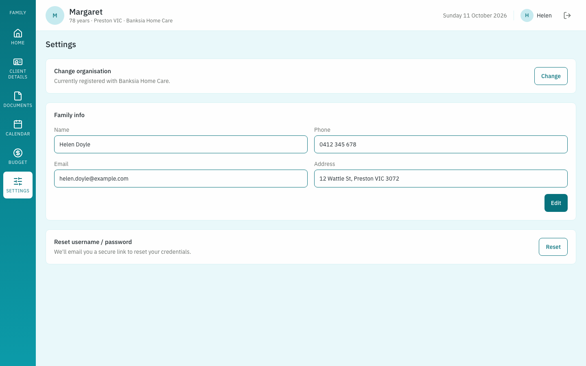
- Change organisation: move your person to a different care organisation. The old organisation loses access straight away. If an organisation stops caring for your person, Care Compass asks you to choose a new one here. All your records stay.
- Family info: click Edit to update your name, phone, email or address.
- Reset username / password: click Reset and Care Compass emails you a link to set a new password.
Questions people often ask
| Question | Answer |
|---|---|
| Why can the carers not see my person's plan? | The organisation has not been chosen yet. Do "Link your person to their care organisation" in section 1. |
| Can I tick off a task myself? | No. Only the carer on shift can. This is so you can trust that care was given. |
| I added an event that repeats. How do I stop it? | Open the event, click Edit event, choose Entire series and change how often it repeats. |
| Why does a bucket show a low percentage when a lot was spent? | The percentage is for this month only. Money you did not spend earlier carries over. |
| I forgot my password. | Click Forgot password? on the sign-in page and follow the email. |